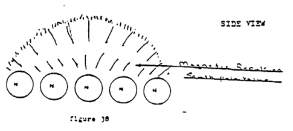

Chapter 9: The Structure of the Sun
SOLAR RESEARCH
Introduction
In the mid 1970's an in-depth study of our solar system's nucleus, the sun, was initiated by the Stardust Team which has led to many startling discoveries. The experimental methods employed included collecting photographs, drawings, and detailed data from many observatories and research stations around the world, building models based on the data, and making countless calculations. Working to make sense of seeming contradictions exhibited by the sun, our team focused on its many well documented but unexplained behaviors and characteristics, a few of which are listed below, and gradually a clear picture began to emerge.
Major Solar "Mysteries":
- The solar surface appears "grainy"
- The sun emits many different frequencies
- Solar storms vary in both size and field strength
- Solar flares are relatively common occurrences
- Solar storms often move over the surface of the sun with no regard for the direction of the sun's rotation
- Solar prominences occur in which trillions of tons of mass temporarily escape from the main body of the sun and relocate elsewhere
- The solar surface contains many crevasses and valleys which appear, remain for a length of time, and then disappear
- The sun shines and is hot, and the earth shines and experiences warmth from the sun, yet space is cold and dark
If the reader has ever tried to follow the reasoning of current scientific thought on these and other questions, then two things should be clear, namely, the scientific community as a whole is convinced that our sun is in effect a huge nuclear reactor, and that because of this conviction their subsequent theories are speculative and/or contradictory and confused. If the reader were to take the time to delve into current theory on questions relating to solar activity, it would quickly become apparent that no theory is too contradictory to be given loud applause and wide circulation, if only said theory does not in any way conflict with the idea that the sun is a nuclear reactor.
After completing our study of falling bodies in general, we fully realized that modern science was not infallible, so in solar research we relied only on direct evidence, and ignored all previous theories. Masses of accumulated information were sorted and classified, then based on this data various solar models were constructed and analyzed. Clearly, there were two possible explanations for the existence of multiple and changing magnetic fields on the sun. One would be if through the use of broad assumptions and "open parameters" we were to make the sun into a unique phenomenon, capable of producing these many fields even though it was a single body (as current theory maintains). The other possible explanation was that the sun was not a single body at all. Since it's a well demonstrated fact that in nature a single body cannot produce many-poled fields, and because we had denied ourselves the use of arbitrary assumptions, our team agreed to consider the possibility that the sun was multi-bodied, and we constructed our models accordingly. Mathematical calculations were made based on what we then knew about the dynamics of falling bodies from previous research, and year by year the mysteries began to solve themselves.
SOLAR STRUCTURE
Deep within our nucleus, the sun, reside many huge bodies which are roughly the size of the planet Jupiter. Each has its own rotation rate and builds a field of extracted energy about itself as does any falling body. The repulsive action of this field of energy guarantees space between the bodies. Calculations show there are approximately two thousand of these massive bodies, all rotating at a rate determined by their specific mass. Though there is this variation in their individual rotation rates due to differing mass factors, these huge bodies are all orbiting the center of gravity at roughly the same rate, and due to their close proximity to the center of gravity they together complete an orbit of this gravitational center approximately every forty eight hours. These massive bodies, individually and as a unit, are in motion at an extremely high velocity.
On the outer shell of the sun reside thousands of smaller, earth sized bodies, which also have an individual rotation rate determined by their specific mass. Each of these obey the laws of falling bodies, and so build an individual field of extracted energy about themselves which repulses the fields of all other falling bodies, thus ensuring space between them. These bodies also orbit the gravitational center of the sun at a constant velocity, but due to their greater distance from the center they complete an orbit only every thirtytwo days.
The area between the major bodies (interior near the gravitational center) and the minor bodies (outer crust) is filled with many thousands of bodies which range in size between these two extremes. To visualize this arrangement imagine many thousands of different sized bodies within a given sphere, where the largest bodies are in the center, and the rest of the bodies become progressively smaller the nearer their proximity to the outer crust. A highly simplified cross section of the sun illustrates this below.
![Diagram is labelled on the right: 'minor bodies create the grainy appearance of the solar surface'. Another label on the left side says: 'Cross section of the sun showing body position and rotation'. Diagram shows a centre circle, with 6 concentric rings around it, each ring is made up of circles. The centre circle is the largest. Immediately around that circle is the first ring of circles, they are slightly smaller in size than the centre circle. All circles bear arrows showing counter-clockwise motion. The next concentric circle is made up of circles of a smaller diameter. The next concentric circle is again made up of circles of a smaller diameter still And so on, until we reach the outer concentric ring of circles which are made up of almost specks, but we see arrows marking their counter-clockwise motion.](./img/fig33.jpg)
Fig. 33: Cross section of the sun showing body position and rotation. Minor bodies create the grainy appearance of the solar surface
We've explained that the major bodies are in close proximity to the center of gravity and complete an orbit of this center approximately every forty eight hours, and that the minor bodies at a greater distance complete the same orbit of the center every thirtytwo days. All of the intermediate bodies residing between these two extremes also orbit the same center, but at varying rates determined by their mass and subsequent position within the body of the sun. The larger of these intermediate bodies will be found closer to the major bodies nearer the center, and their rotation rate approaches that of the major bodies. Also, being relatively close to the center of gravity of the sun allows them to complete an orbit of that center in a relatively short period of time. The smaller intermediate bodies will have a slower rotation rate, and because they reside closer to the surface of the sun and farther from the center of gravity, the time it takes for one of these bodies to complete an orbit of the center is more than for larger bodies. This concept of varying orbital rates is roughly illustrated in the cross section below.
![Same as Fig 33, with these additions: On the right a label explains: 'Vector A = 32 days; Vector B = 15 days; Vector C = 7 days; Vector D = 24 hours'. On the left a label says: 'Cross section of the sun showing orbit rates.' The concentric rings each have a letter, and an arrows pointing counter-clockwise, indicating that each concentric (made of the circles) collectively flow counter-clockwise. The outermost ring is labelled 'A'. The next one in, 'B'. etc. 'D' is the ring that is closest to the centre circle.](./img/fig34.jpg)
Fig. 34: Cross section of the sun showing orbit rates (typo's "Sector" should be "Vector")
At the exact center of the sun is found one huge body which is the exact center of gravity of the sun. Its rotation rate is so fast as to be measured in hours rather than days, and calculated in miles per second, the rate at the surface is astronomical. Surrounding and orbiting this central body are found the largest of the major bodies which together with the central body form the sun's core. These large bodies have reached a relative balance in that their poles are aligned North to South, allowing them to operate as a strong unit of bodies. Due to the repulsive force generated by each of them, space still exists between them and they all continue to rotate individually, but the attraction between their poles is great enough that they remain "locked" in a magnetic embrace. Figure 35 attempts to illustrate this below.
SOLAR CORE

Fig. 35: Solar Core
The bodies which form the core of the sun also rotate as a single body, and so jointly produce a second, larger field of extracted energy (see test three, page four and figures 21 and 22, page twenty). This core represents the center of gravity of both the sun and of our solar system as a whole, and the powerful gravitational field it produces exerts a strong influence on bodies in close proximity, holding them tightly within a relatively small area, causing less space to exist between the major bodies than there would be if no core existed. Together the core and the major bodies comprise what could be called the nucleus of the sun, and within this nucleus is found 99.9% of the total mass of the sun.
Though the actions of the core are very important in explaining the reasons for the eleven year cycle (and other cycles), reversal of the major poles of the sun, and other questions, these subjects are not vital to the goals of this particular paper and so the intricacies of core/nucleus dynamics will be addressed in a supplemental writing. For now it is enough if the reader will just keep in mind that it's there.
Before we move on it should be mentioned that the core and major bodies existing near the center exert a very strong influence on the smaller bodies nearer the outer crust. As they rotate and orbit the center at tremendous velocities, these massive bodies regularly manipulate the smaller bodies by means of the superior strength of their magnetic fields. When it happens that in their rotation and orbit a number of these major bodies come to have a major pole facing outward (toward the crust of the sun) it causes the smaller bodies to align themselves in accordance with the polarity of the major poles. All bodies within the sphere of influence of these major bodies continue to rotate and orbit the center of gravity, but have now become in effect a separate unit in that they will also rotate and orbit as a system of bodies for the length of time they remain under the domination of the magnetic field of the major bodies. These systems of bodies are continually realigning and reversing their polarity as the major bodies continue their rotation and orbits, and different bodies move into dominant positions. Systems of smaller bodies thus polarized we refer to as secondary bodies, and one example is illustrated in the cutaway diagram below.

Fig. 36: Cut-away view of the sun showing secondary bodies
Again, knowledge of the existence and origin of the secondary bodies is not vital to this particular paper, but if the reader would decide to pursue the subject of solar structure by investigating some of the fine work published in recent years, particularly in the area of helioseismologyHelioseismology: the study of the interior of the Sun from observations of the vibrations of its surface. Originates from 'Helio-', a Greek word for 'sun', and 'Seismology', from the Greek 'seismos' meaning 'earthquake', combined with '-ology', meaning 'study of'. from Berkeley.edu "What is Helioseismology?"
, a basic understanding of the dynamics of these secondary bodies allows one to quickly make sense of the results produced by this research. It is not difficult to see why these research stations are detecting such a wide range of frequencies (oscillations) from the sun as a whole, and frequencies within frequencies in the cases of polarized, secondary bodies. Clearly, when a major frequency is detected on the surface of the sun its cause is the fact that the secondary body is rotating as if it were a single body, while at the same time each and every minor body within this system also continues to rotate (oscillate) and so sends out an individual frequency. Some of the computer models produced by the helioseismologists quite beautifully illustrate the multibodied structure of the sun (example: cover, Scientific American Magazine, 9/85 Cover of Scientific American Magazine, September 1985. Headline: "Soundwaves in the Sun"
) and the data on which the models are based does not conflict with our assertion that the sun is multibodied. On the contrary, their findings fully support our model of solar structure, and so deserve careful study by persons interested in our research on the sun.
SOLAR DYNAMICS
If basic solar structure is now reasonably clear in the reader's mind, the picture is not yet complete until we consider the violent forces at work within the body of the sun, because to visualize the many bodies within our nucleus as rotating and orbiting peacefully would be incorrect. Due to the various velocities involved, the many sizes of bodies all possessing independent magnetic fields and rotation rates, and the fact that as falling bodies they must orbit the center of the primary gravitational field through which they fall, conflicts are inevitable and ongoing. It would therefore be much more accurate to visualize the sun as a twisting, churning mass of bodies in a furious struggle to obey their "urge" to follow a given orbit at a given velocity and rotation rate, while they are simultaneously thwarted in this endeavor by opposition presented by the repulsive actions of other fields whose bodies vie for the same space in an effort to satisfy their own "urges". The net effect of these ongoing confrontations is a mass of bodies raging violently in constant conflict with neighboring bodies and experiencing compulsory and often extreme interactions with the fields of force produced by the rival bodies.
It should not be difficult to visualize that as these many bodies rotate and attempt to follow a balanced orbit there will be constant confrontations, as two or more bodies are forced into poletopole interactions. When it happens that like poles of major bodies are thus compelled to interface, the repulsion between them is great. Clearly, however, the effects of such a confrontation will vary depending upon the number of bodies involved. In a case where only two like poles would come to interface, for instance, there would be a repulsion felt by other bodies in the vicinity, but the reaction would not be severe enough to be strongly felt on the outer crust of the sun, and so would not be visible to an earth observer.
In a case where multiple like poles of different bodies were forced into a confrontation, the result would necessarily be much more extreme. The repulsive actions caused by such a meeting of like poles would create a repulsive force so severe that it would be visible on the outer crust as a solar storm (or "sun spot"). At times, when many very large bodies become involved in such a confrontation the repulsion between them becomes so great that bodies on the crust are temporarily pushed out from the main body of the sun (i.e.: "flare" out). Though the repulsion is strong, it is not strong enough to fling these minor bodies completely out of the body of the sun, and so at a point where the attraction to the main body of the sun overcomes the repulsion caused by the reaction deeper within, the minor bodies are pulled back into the main body, where the repulsion caused by the continuing inner confrontation again pushes the minor bodies outward. This cycle where the minor bodies are thus manipulated (or "pushed and pulled") is the reason why, to earth observers, the sun's surface appears to be "boiling".
Because there are so many bodies within the nucleus we call sun, these confrontations of which we speak are occurring constantly, and it is not unusual for any number of them to be strong enough to be felt on the outer crust at any given time. It is therefore not unusual for several or more of these to be major interactions which are visible on the crust of the sun, and which of course account for the oft photographed "spots" on the sun. The continuing motion of the more central bodies causing the "storm" easily accounts for the motion of these storm across the sun's surface, and following that cycle through, it is not difficult to see why these storms dissipate and then vanish when the more central bodies rotate away from each other and end their confrontation.
With the masses of scientific data published daily, our team has been unable to keep up with all new findings, so we're unsure whether researchers have found that these storms, sun spots, and flares they speak of have definite pole values, and for a fact, we aren't even certain instrumentation yet exists which would provide such information, but regardless, if it hasn't been officially determine yet it will soon be found that these storms on the sun's surface are not only magnetic fields, but have pole values as well. Storms caused by NorthNorth pole interactions of major bodies will create a storm with a North pole value, while SouthSouth pole interactions manifest on the surface as a storm with a South pole value.
If we carry the discussion of like pole interactions one step further, a solar prominence is easily explained. As stated, like pole confrontations are occurring constantly within the body of the sun sometimes between North poles of various bodies, sometimes between South poles, and of course the resulting "storm" will reflect whatever pole value the confrontation happens to be. Now, it is not uncommon for a large NorthNorth pole interaction to be occurring in one location within the sun's interior while a million or more miles away a SouthSouth interaction is occurring between other bodies. As we've explained, the repulsive force created by such a like pole interaction is sometimes great enough to actually repulse minor bodies away from the main body of the sun, and that they are "pushed" outward to the point where the attraction of the sun as a whole overcomes the repulsive force of the inner bodies, and the minor bodies again are pulled back into the main body. In the case of a solar prominence, the minor bodies do not return to their original position. Instead, when the minor bodies reach the critical point where the repulsion they experience is about to give way to their attraction to the body of the sun, they "feel" the oppositely polarized bodies which happen to have been simultaneously repulsed by a neighboring (but opposite) like pole interaction, and they are drawn to it, traveling there in a great arc at a tremendous velocity. Concurrently, bodies repulsed as a result of the neighboring but opposite like pole interaction "feel" and are drawn to their opposite, again traveling in a great arc. This sequence of events are illustrated in the following series of diagrams.
![Two rows of 5 circles are shown. The illustration is labelled “Top View”, and bears text: “North pole to North pole magnetic alignment”. Each circle has a “N” inside the circle, but at the furthest end of the two rows. And outside it, away from the circle there is an “S”. Seemingly indicating that the circle has a N value, and no S value inside it. The two rows of circles are connected by an elliptical jagged line. An arrow points to the space within the two rows of circles with the text “Magnetic repulsion, North pole value”.](./img/fig37.jpg)
Fig. 37: Top View: North pole to North pole magnetic alignment
Fig. 37 a: Side View
![Similar to Fig 37, Also “Top view”. Except now the two rows of 5 circles bear “S” inside each circle. And these “S’es” are written nearer to the middle of the two rows.
The rows of circles are joined up by jagged lines protruding from the centre of the rows outward.. The illustration is labelled: “South pole to South pole magnetic alignment:
A second illustration under “fig 38”, shows the same “hedgehog”, meaning 5 circles viewed from the side, with lines erupting upwards. This time each circle bears the “N”. The Illustration bears text: “Erupted mass is polarized with a South pole value”. An arrow points to the space within the two rows of circles with the text “Magnetic repulsion, South pole value”.](./img/fig38.jpg)
Fig. 38
Fig. 38 a: Erupted mass is polarized with a South pole value

Fig. 39: Solar prominence
Solar prominences are spectacular events which tend to puzzle scientists who hold with the theory that the sun is a nuclear reactor and gravity is exclusively an attracting force, but with an understanding of the multi-bodied structure of the sun, it is not difficult to see that such prominences do not require special exceptions to be written into physics to account for them. All they do require is two opposite but roughly equal like pole interactions to occur during the same period of time, and in the same general vicinity.
With the hope that like pole interactions are now reasonably clear to the reader, we will now move on to discuss those reactions which will seem to show a neutral pole value, ie., those reactions caused by unlike poletopole interactions between major bodies.
As with like pole confrontations described earlier, unlike (or opposite) pole interactions occur continuously between major and intermediate sized bodies, but are not always strong enough to be felt and to therefore be visible on the surface of the sun. Only when there are numerous bodies involved is the reaction severe enough to visibly affect the minor bodies, and when this happens, the effect is immediate and very dramatic.
When a major unlike poletopole confrontation occurs which involves many bodies, the attraction created between these bodies is enormous, and is strongly felt by bodies even on the outer crust. Instead of being pushed away as they are when like pole interactions occur, they are now pulled toward the bodies creating this huge attraction, and to earth observers the result will appear to be the manifestation of a gigantic "crack" or crevasse on the sun's surface which suddenly forms, remains for a time, and then disappears once again. As with like pole confrontations, the visible effects of an interaction between unlike poles (i.e.: crevasses and valleys) dissipates and ends only when the major bodies causing the effect rotate away from each other to continue their orbits and confront new rivals.
If instrumentation exists and a study is made, it will be discovered that such a crevasse has no specific pole value, and will in fact produce a neutral reading, however, further investigation will show that the area to one side of the crack (or crevasse) does have a most definite pole value, while the area on the other side of the crevasse carries the opposite value. The reason for this is shown in the following illustration.

Fig. 40: North to South interfacing results in crevasses and/or cracks
![The diagram shows two rows of five spheres. Each sphere has S at the top and N at the bottom, with two concentric circles inside. Two concentric elliptical lines encircle both rows, creating an ecliptic plane. A diagonal line cuts the plane into top and bottom sections. An arrow points to the center, stating: 'Crevasse itself will have a neutral magnetic reading'. The top half is labelled: 'One edge of the crevasse will have a South pole value'. The bottom half: 'One edge of the crevasse will have a North pole value'. Two arrows point to the outer edge on both top and bottom sections: 'Further from the edge an opposite pole reading will be found'.](./img/fig41.jpg)
Fig. 41: Magnetic field distribution in a crevasse
These unlike pole-to-pole interactions are very important to fully understand, because this specific action is the foundation for future, more in depth discussions. For now it is enough if the reader can begin to visualize such interactions between bodies so huge as to make our earth seem like an insignificant speck of dust, and to begin to get an idea of the tremendous forces at work within our multi-bodied nucleus. When unlike poles interface they attract, and would prefer to remain in their position of alignment, but the forces exerted by the other equally massive bodies surrounding them (all of which are experiencing various interactions of their own) added to the force exerted by all bodies as they press forward attempting to satisfy their need to orbit and rotate, will not allow unlike pole alignments to remain intact for very long. With even a rudimentary grasp of the true nature of our dynamic nucleus, the sun, it should be easy to see that the great forces required to break an unlike poletopole interaction are readily available, and act quickly to tear aligned bodies away from each other, breaking the magnetic bonds created by these strong but fleeting unlike pole alignments.
POWER GENERATION
We can state that, in the purest sense, motion is the force which powers our sun, for without motion the bodies within our nucleus would not build and maintain their individual fields of force, and would cease their orbits and rotation. Without motion, the bodies of the sun would retain no unified gravitational field, and so would simply drift apart. In this sense then, motion is the catalyst which powers the generator called sun. The power available is directly proportional to the velocity of the fall at the rate of velocity squared, and of course the greater the total mass, the greater the potential.
As previously seen in the study of falling bodies (segment two) the cycle of extracted (neutral) energy which makes a great loop and is then funneled back into the body at the poles is the gravitational field. We maintain that it is the flow of neutral energy (gravity) which causes a magnetic field to form in and around a falling body, and this also holds true for a multi-bodied formation such as our (or any) sun. Being comprised of many thousands of bodies, all with individual gravitational and magnetic fields, a sun can rightly be called a gravity machine.
As we have shown, all of these many bodies rotate and orbit at specific rates determined by their individual mass, etc. They are all held within the sphere we call sun by the gravitational field produced by all of them as a unit (see test three, page four and figure 21, page 20).

It must be noted that when a line of flux is cut or broken, the energy released is moving at a velocity, in excess of the velocity of light. From the point of release, this high velocity neutral energy travels one of two main pathways. It will either escape the body of the sun in its high velocity, neutral state, or it will slow to below .9 times the velocity of light and convert to mass.
When flux lines of major bodies deep within the sun are cut the energy released is at a tremendous velocity, and is radiated outward, toward the crust area. On its way, it encounters the repulsive fields of the many bodies between its point of origin and the outer crust, and each time it feels such a repulsion it loses velocity. As their velocity decreases to below .9 times that of light, these bubbles of energy begin to "pile up" on each other, forming into mass (see fig. 26, page 24).
![A series of same-size circles are drawn from left to right. Near the left they are evenly spaced, not touching each other. Above them a label is shown: 'above the speed of light'. As the drawn circles progress toward the right the closer they are drawn to each other,. At some point they start touching each other. Then they start overlapping. Above these circles a label appears: 'below the speed of light' .At the far right a fully filled-in, black, circle is shown, with a label 'RESULT: a solid particle'.](./img/fig26.jpg)
Fig. 26
The resulting minute particles of mass now begin to assemble into systems of particles, and then into systems of systems, or atoms. These newly formed and simple atoms are exclusively hydrogen (all three weights) but because their assimilation is occurring very rapidly, they are not always well balanced atoms, and usually form into either very light or very heavy hydrogen, which is extremely isotopic by nature. Because of this rapid assimilation these atoms lack the energy required to achieve balance, and energy radiated by the sun is moving at such a high velocity that the new atoms cannot capture and utilize it in their assimilation. Lacking energy and being very isotopic, the new atoms combine with one another in an attempt to balance themselves. The result of this "joining" is a hydrogen fusion reaction which takes the form of a massive hydrogen implosion near the surface of the solar generator. The atoms formed as a result of this joining contain more particles, but now their lack of energy is even more pronounced, which sets up the next implosion reaction. This need to achieve a balance assures that implosion reactions will be ongoing.We could go into much finer detail here, but for now it is enough if we've managed to explain two major points. First, the sun is not in the process of burning out, as is currently taught, but rather is continually building mass, and is therefore growing larger every day. Secondly, it should be realized that these hydrogen implosions are nature's way of attempting to replace imbalance with balance, and so in a very limited sense, hydrogen fusion is a thing of nature.
To now briefly address the fate of energy radiated from the sun in a neutral state we must turn our attention to energy produced closer to the surface of the sun. Though most of this paper has focused on actions of the major bodies, it must be remembered that the minor and intermediate sized bodies experience the same cycles, and so also release energy when their lines of flux are sheared. Being closer to the crust area, energy released from these smaller bodies have a much better chance of traveling to the surface without losing much of their velocity. Those bubbles which succeed in retaining a velocity above .9 times that of light travel outward, toward the boundaries of the gravitational field of the sun. If they encounter no obstacles to slow them down, most of them will eventually make a great loop and return to the sun as input energy at the sun's poles. If, on the other hand, they run into a barrier or an object which abruptly slows their velocity, these bubbles collide and join with other bubbles similarly slowed to form a frequency, as shown below (see also test eight, pages ten and eleven).

Fig. 42: Neutral energy to Polarized energy
Only when thusly polarized do these bubbles of energy create heat and the various lights in the spectrum. This is why space is cold and dark. Remember too that bodies produce energy bubbles which are of a size proportional to the size and velocity of the body from which they've been released. This explains why there are so many frequencies of light everything depends on the original size of the bubble smaller bubbles manifest as shorter frequencies, and larger bubbles manifest as longer frequencies.
SUMMARY
In other disclosures we have warned of future fusion reactions in our own atmosphere, and hopefully now the reader can see that these warnings have a firm foundation. Minute particles released through nuclear fission on earth ultimately result in the formation of the same type of low energy hydrogen described earlier in this paper. Nuclear fusion is a thing of nature in the sense that it's the method employed by nature to attempt to balance low energy atoms. It is a natural reaction and is common and beneficial to the sun (adding new mass to the solar generator), but on earth the results of such reactions will be tragic and highly destabilizing. It is our view that such reactions are already occurring on a small scale on our planet, and that some have even been witnessed. We again warn that this is only the beginning. Fusion reactions will continue to occur with increasing frequency and strength, leaving severe environmental repercussions and heavy loss of life in their wake. These fusion implosions are able to occur anywhere these fission released particles have gathered, so in a very real sense, there's no safe place to hide from this threat. Our only option now is to repair the damage fission has done to our planet, and it is not beyond our power to do so, for now we can produce the same energy as does the sun. This technology, coupled with a correct understanding of nature's laws, are the tools required, and we say again we've tested a small model, and have produced the repulsive force. This is the reason we are so very certain that our predictions will come to pass - the theory is correct. All that remains to be done is to further develop and perfect the technology, and then apply it to heal the most grievous wounds suffered by our earth.
As always, the most difficult task in assembling a paper such as this is trying to decide how much to say now, versus what can and should be said later. It is our hope that the decisions we've made in this regard were correct, and that the material we've included will succeed in presenting the broad overview of solar structure and function we sought. If our effort has indeed been successful, we will have left the reader with a good idea of solar structure, and more importantly, of the dynamics and method of power generation employed by our life-giving nucleus. If it is now clear why we say the sun is not a nuclear reactor by current definition, then we have come a long way toward reaching our most urgent goal. Once it is understood that not only is fission antinature, but is in fact killing our planet, perhaps the people of earth will at last join together and declare, in unison, "ENOUGH IS ENOUGH".